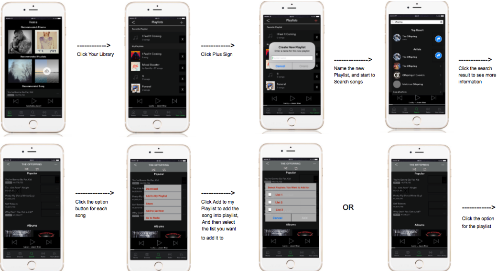
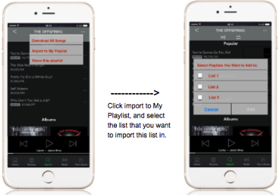

The aim of this project is to redesigning major streaming mobile apps. Working in a group of three, we focused improving the flow of creating, managing, and running playlists.
The first step was interviewing users who used different streaming mobile apps. The interviews consists of asking interviewees how to perform a certain scenario (Creating a playlist, adding/deleting a song, etc.) to see the different flows that each major streaming app offered. We concentrated on what made a sequence of steps simplest and most straightforward to a user to take account of for our redesign. Most importantly, we took notes on what confused or bothered users to know what to avoid for our redesign.
After interviewing different users, we gathered all the information and determined which streaming app had the best user workflow. We did comparisons for different scenario and compared step-by-step what made a workflow better than another app. We would then take the best workflow of each scenario and incorporate it into our design.
For example, we compared the workflow for Spotify and Youtube on creating a playlist before browsing for songs to add. For Splotify, users can create a playlist in two ways. 1) Users can go to their playlist page and click on the create playlist button. 2) Users find a song they like and chooses the add the song to playlist option, where they are given the choice to add the song to an existing playlist or create a new one. On the other hand, Youtube only allows users to create a playlist by adding a song to their playlist and is then given the choice to add to existing or create new. Users cannot create a new playlist when accessing their playlist page, which is confusing if users are looking for this option.
Here is our final design. This design will let users have a better experience on Playlist Management.
 We did some hard final decisions to get this design.